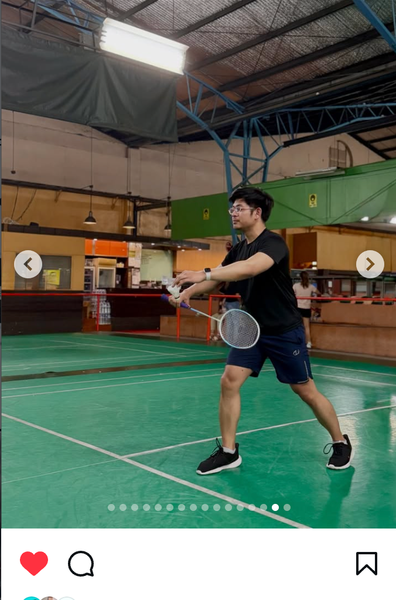
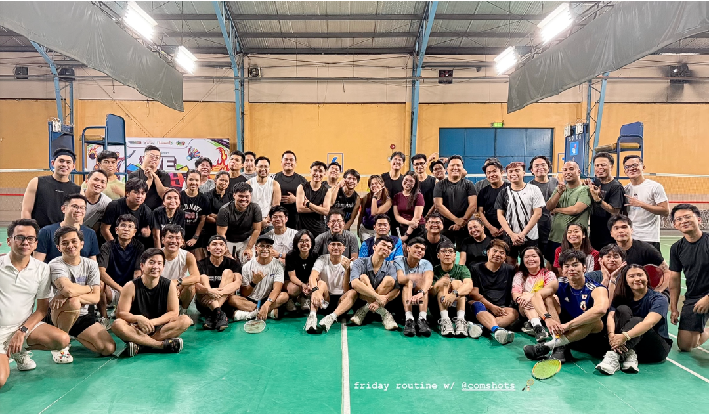
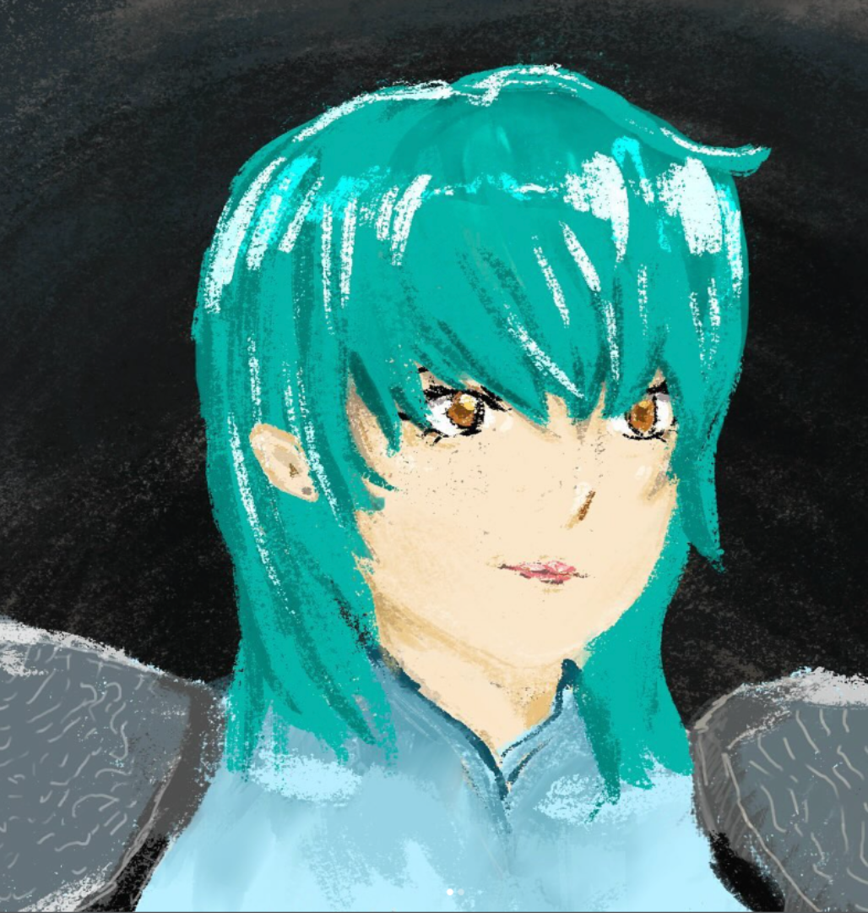
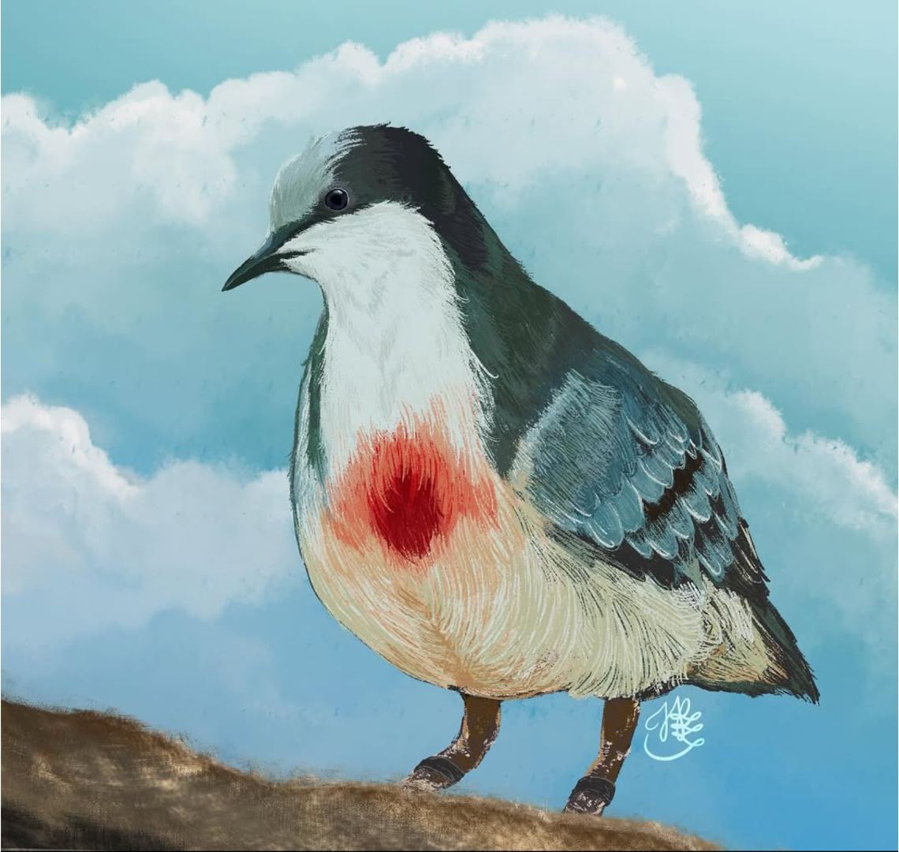
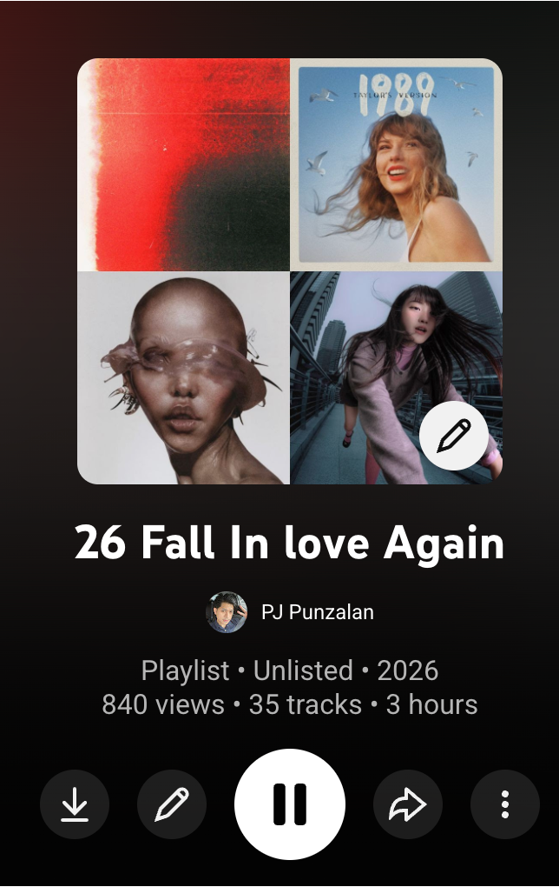
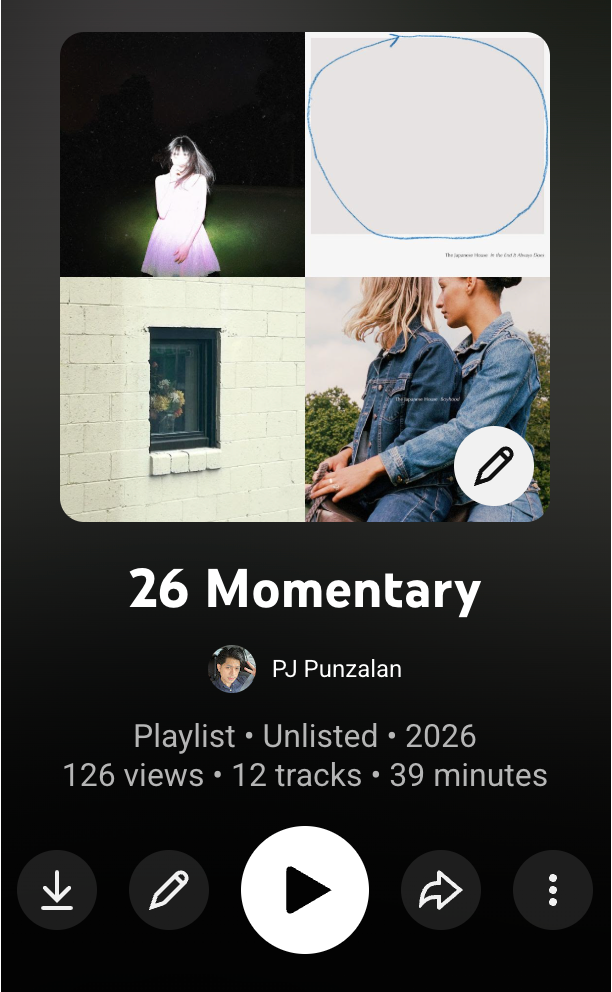

Greetings dear! My name is PJ, a Test Product Engineer learning Web Development.
With computing becoming inclusive to everyone, I want to explore every little bit of it.
While I have to work with UPOU modules and with the use of AI for teaching myself, I need
to make sure that I am learning on my own pace, and enjoy the slow times.
Beyond the grind is another frustrated Badminton Player wanna-be! Should I add lightweight sensors on my racket??? We will never know! Sharing a part of myself is my tribute for this Mini Project for CMSC207!
I appreciate playing badminton as it helps me become grounded in the present. I joined Comshots this year and this is actually my first badminton club ever!


To make sure I have my soft skills and appreciate the way of the living, I do digital and traditional art for tangible creations. Below are my posted works in my art account. Open IG link here: Foxen_Co


Another way of living life to the fullest is adding audio experiences. I handpick songs during certain times of my month and gather them in certain themes. I usually give these playlists as a gift to my friends.
Please click the playslists below to access my unlisted song tracks!


Email: Japunzalan@upou.edu.ph